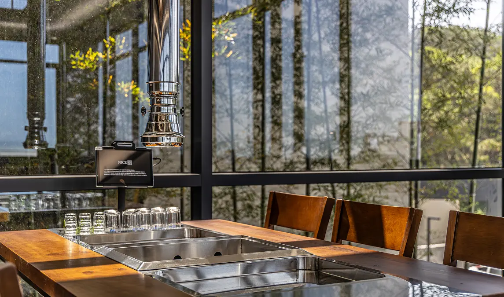
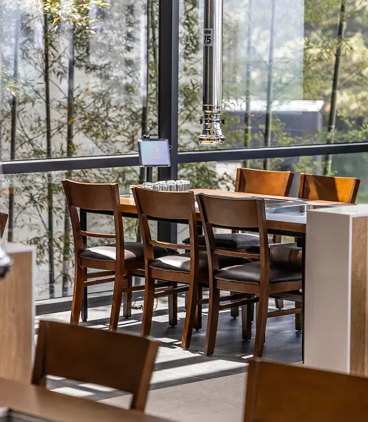
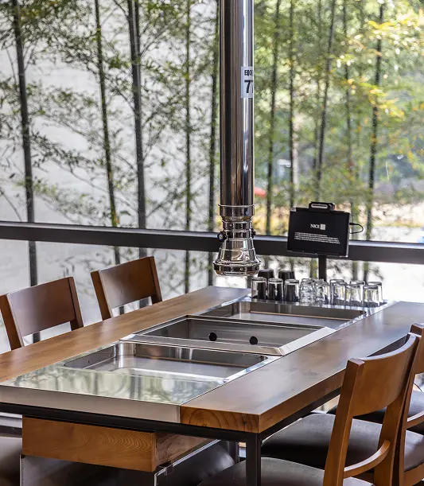
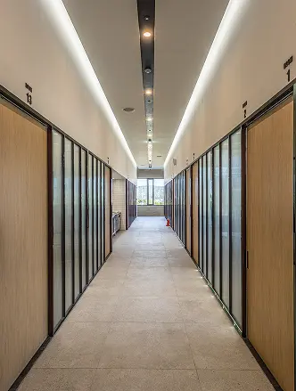
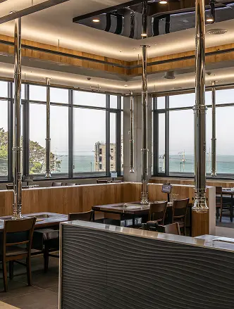
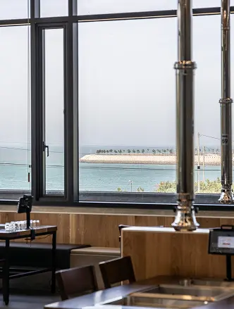
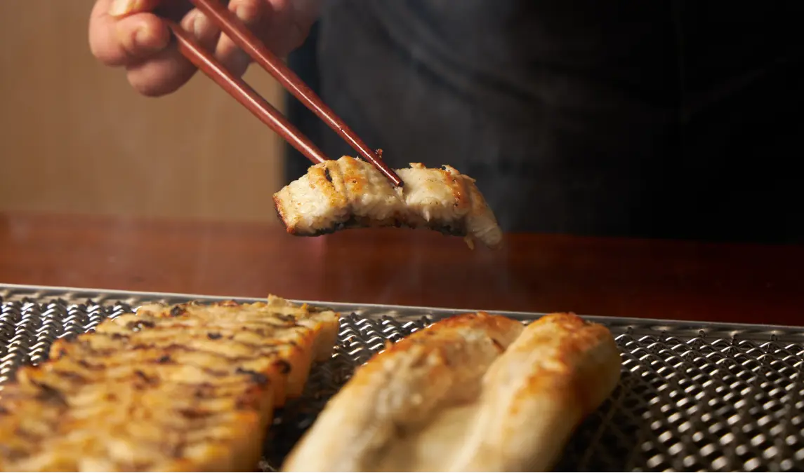

'품장'의 이야기

우리는 2009년부터 장어 양식을 시작했습니다.
빠른 성장보다 중요한 것은,
사람이 안심하고 먹을 수 있는 장어를 키우는 일이었습니다.
최신 시설과 250m 천연 지하 암반수에서
100% 자포니카종(토종 장어)만을 고집하며,
한 마리 한 마리를 직접 살피고 정성껏 키운
무항생제 민물장어를 길러왔습니다.
이 좋은 장어를 남의 손에 맡기기보다,
우리가 직접 굽고 고객의 식탁까지 책임지고 싶다는 마음으로
이곳, 품장을 시작했습니다.
키우는 사람의 마음과
굽는 사람의 손길이 이어질 때,
장어에 대한 진심도 더 온전히 전해진다고 믿습니다.


장어는 보양식이라는 이름으로 소비되지만,
그 과정은 잘 드러나지 않는 경우가 많습니다.
출처가 분명하지 않거나,
속도를 우선한 방식이 당연해진 시장에서
우리는 다른 선택을 하고 싶었습니다.



필요한 시간은 아끼지 않고, 과정 또한 생략하지 않습니다.
장어 한 마리에 담긴 모든 시간을 정직하게 전합니다.
유행이 아닌 기준으로 기억되는 장어집.
“장어는 여기”라는 말이 자연스럽게 나오는 공간.
언제 방문해도 신뢰가 먼저 떠오르는 이름이 되는 것.
그것이 우리가 그리고 있는 품장의 모습입니다.

우리는 세 가지를 기준으로 삼습니다.
첫째, 숨기지 않는 출처
둘째, 줄이지 않는 시간
셋째, 끝까지 책임지는 맛
이 세 가지는 선택이 아니라 기준입니다.
장어 한 마리가 고객의 식탁에 오르기까지,
우리는 어느 하나도 빠뜨리지 않습니다.
우리는 특별해지려 하지 않습니다.
그저 오늘도 같은 장어를, 같은 마음으로 굽습니다.
시간이 지나도 달라지지 않는 한 끼.
말보다 경험으로 기억되는 진심으로, 이 자리를 지켜가겠습니다.